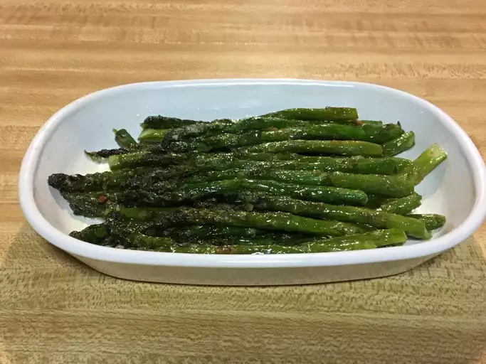

Pan-Fried Asparagus

Learn how to cook asparagus on the stove by pan-frying it in butter with garlic for a delicious Italian-style side dish.
Ingredients
- This pan-fried asparagus is simply seasoned with coarse salt, ground black pepper, and fresh garlic.
Directions
- Melt the butter in a pan.
- Stir in the oil, seasonings, and garlic.
- Add the asparagus and cook until it’s fork-tender.